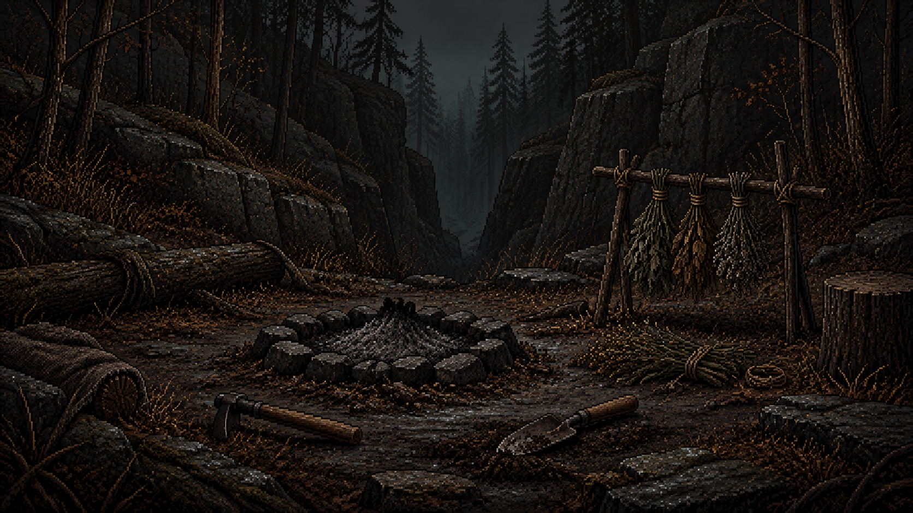

괴이탐사국 · 2026.09.09 · 검토 대기
사건 한 장, 세 갈래 숲길
원문의 선택 전 풍경만 담았습니다. 아직 게임에 연결하지 않은 검토용 원본입니다.
EVT-01 · 식어 있는 야영지
꺼진 화덕의 재 · 말리다 만 약초 · 흙 묻은 도구

세 선택이 공통으로 보는 상단 삽화입니다. 불을 다시 지핀 결과나 괴생물체, 보상은 미리 보여주지 않습니다. 원본 1672×941.
2층 경로 카드 3종
R02-A
발자국이 남은 숲길

낮은 수풀 사이로 좁은 길이 이어진다.
잘린 덩굴과 뒤엉킨 발자국이 보인다.
1024×1536 원본
R02-B
천막의 흔적

나무 사이에 덧댄 천이 보인다.
낮은 목소리와 금속 마찰음이 들린다.
1024×1536 원본
R02-C
젖은 숲 가장자리

물먹은 나무뿌리가 길을 좁힌다.
수풀 안쪽에서 짧은 움직임이 반복된다.
1024×1536 원본